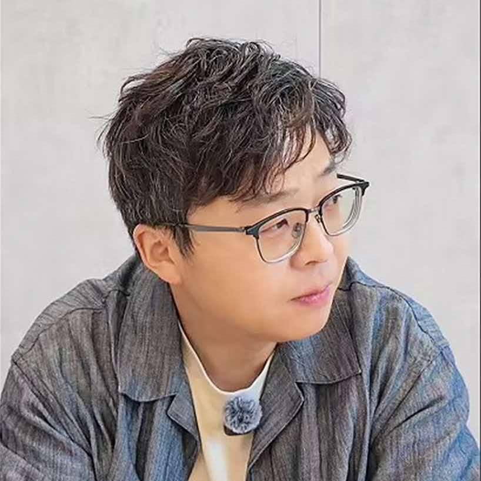
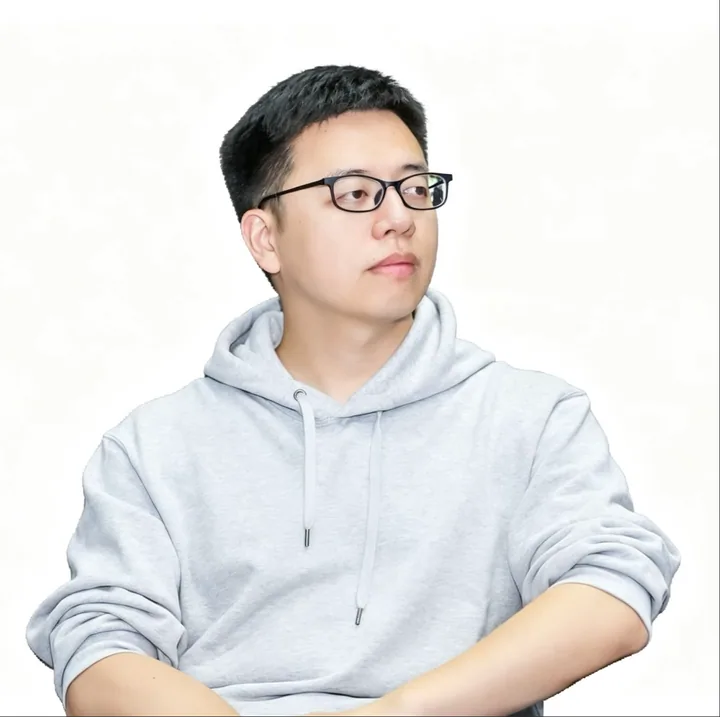
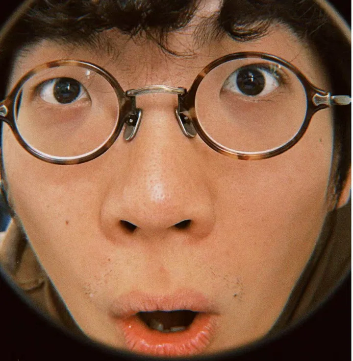
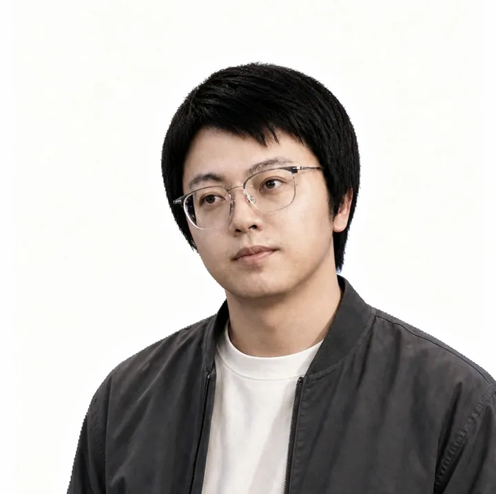

赛事简介
AI产品的竞争，不只在模型能力和功能数量，也在于用户能否看懂、会用、敢用、持续使用，好的体验设计能让产品价值自然流淌。
我们邀请每一位对设计有热情的创作者，为帆软悟帆、Dora、MOSS、吸管等AI新产品，以真实产品和真实问题为起点，定义看得懂、会使用、敢信任、愿持续使用的体验，让 AI的价值被更自然地理解、体验与信任。
你的设计，有机会被直接采纳进入真实产品!
赛事日程
赛道介绍
围绕对应产品选题，完成官网/主界面视觉设计或改版、AI对话体验设计、核心功能体验设计等任意一种或多种作品表达
命题 · 让悟帆的“AI员工深入业务过程”的价值主张深入人心
悟帆在Agent Harness底座之上，区别于其他产品的一个重要的主张是能够打造“围绕用户场景的各类AI员工+业务嵌入”；在此之上我们构建了基础的三板斧：让业务方用户也能上手的员工孵化与场景构建门槛：纯通过对话完成AI员工的孵化与相关技能、工具的进一步构建；悟帆x简道云的“AI员工x业务应用“的融合路径：让AI员工有机会直接参与到简道云的业务应用中，从表单、流程等真实的业务过程中自然嵌入与驻岗；构建面向企业级视角的“价值中心”：将企业沉淀的各类AI员工、业务场景，进行集中的上架与分发，形成AI价值沉淀与流动
问题和挑战
如何能在短时间内快速让用户获得和市场上同类产品的显著差异化主张的Aha时刻？如何让用户快速get“AI员工”、“业务落地”、“业务嵌入”这些关键概念，从而从直觉上和个人提效办公类AI产品拉开直觉上的认知差距？产品的特征和“小龙虾系”产品存在相似性带来的进一步认知模糊，需要用户深入使用才能感受到我们的主张和差异化，这种“第一眼”认知与心智如何快速传递？
命题说明
在当前的产品之上，产品的核心价值主张落在实际的产品表现上仍旧有很多优化、打磨甚至重塑的空间。包括但不限于：这三板斧是否做到了极致？用户是否能快速和显性地Get到产品主张和魅力？是否存在新的产品假设、交互与视觉传达概念来更好塑造产品的主张？是否能让用户在短时间内获得和市场上同类产品的显著差异化的Aha时刻？
命题1 · 一句话发起任务，Dora实现自动编排
问题和挑战产品的用户端存在“Dora、专家团、资源”等一级入口；管理端又有数据、知识、技能、模型、MCP、定时任务、IM 工具等大量概念。系统结构清楚，但用户需要先理解“该找谁、用什么能力、选什么资源”，才能开始工作。
命题说明如何让用户围绕“我想完成什么”发起任务，由 Dora 自动判断应该调用哪个专家、数据、知识和工具，并在必要时再向用户确认？例如用户不需要知道应该进入“专家团”还是“Dora”，只需要说：帮我分析华东区利润下降的原因，并输出一份周会材料。Dora 自动完成专家选择、数据定位、分析路径和交付物生成。
命题2 · 让Dora从等用户提问变成主动推动业务问题解
问题和挑战Dora已经具备定时任务、消息未读、执行记录、数据预警等能力，但这些能力分别散落在智能体配置、导航提醒和管理监控中。目前核心体验仍然是“用户输入一句话、Dora 回答”，主动能力还没有成为用户可感知的主线。
命题说明如何让Dora持续理解用户关注的业务目标，在指标异常、数据更新、任务到期或重要趋势出现时，主动说明发生了什么、为什么值得关注，并给出下一步建议？
命题3 · 让Dora的每个结论都“看得懂、信得过、能追溯”
问题和挑战产品已经存在思考过程、工具步骤、SQL明细、最佳实践引用等能力，但信息分散在会话和后台监控中，普通用户看到一个分析结论时，可能仍然不知道：使用了哪些数据？数据更新到什么时候？使用了什么筛选条件？哪些是事实，哪些是推断？结论出现问题时应该在哪里修正？等等问题
命题说明如何让用户无需阅读复杂执行日志，也能快速判断Dora的结论是否可靠、从哪里追溯，并能低成本纠正错误？
命题 · 让Moss的企业风险查询、洞察与监控体验三者丝滑结合和打通
Moss的企业风险监控管理的场景，相对标准化，有3类不同的操作场景 ：用户主动查询具体某家公司的风险信息：结构化的高频的操作，不必通过AI，可以直接在“智能看板”上查询，这是以数据展示为主；用户围绕风险相关的洞察其他信息：非结构化的场景，或深度探索/长尾场景，例如让智能体结合更多网络上的信息洞察该公司的风险究竟是怎么来的，或结合舆情做风险预判，或让智能体综合分析这个公司的风险可能对自身造成哪些影响，应该如何应对和写报告；定时自动化监控指定企业的风险，及时推送：半结构化的场景，自动化执行，用户持续关注，智能体帮人盯着风险，并能定时推给用户
命题介绍这三类场景如何实现更加有机结合？实现“应用搭配智能体”的更好的体验，提供更顺畅的用户路径，让用户用得更爽？
命题 · 让吸管的对话更“有趣”
问题和挑战吸管作为一个调研、客服、表单信息收集类的AI产品，其中核心的体验在于表单填写页面、问卷填写页面、对话页面。为了确保受访者的调研/问卷填写完成率，我们也设计了一些简单的正反馈：比如游戏化互动设计（达成节点之后绽放烟花），给对话者一些正反馈和情绪价值
命题说明我们希望可以在被访者页面设计一些更有趣的交互视觉体验，比如：触发了追问和反问，意图澄清的时候，是否可以加入一些动向或者说卡通形象在页面上？
奖金和权益
作品提交和评审
作品提交
请提交两项材料到报名表单（立即报名&提交作品 ）。可先报名，后续提交作品材料，材料包含2部分内容：
- 作品呈现：设计原型/前端代码/Demo/HTML/设计稿(Figma链接或源文件)等格式均可，鼓励使用AI工具创作。
- 设计文档：简要说明发现的问题、做出的改变或创意、用户价值，以及已验证的效果(如有)，文档格式不限，建议800字以内。
原创说明：参赛作品须为原创，不得抄袭、侵权、冒用他人成果或提供伪造的用户研究、业务数据、测试结论等虚假信息。
作品知识产权归参赛作者所有;主办方有权将作品用于赛事宣传、官方内外网站浏览。
评审标准
- 设计创新性(50%)：是否以新颖设计突破企业级AI产品体验边界
- 用户体验质量(30%)：是否兼顾易用性、交互效率、流畅度、视觉审美
- 方案完整性(20%)：是否覆盖问题需求、具体方案、效果验证或计划
获奖基础条件为专业评审团通过票数不少于3/5。
大赛评委
由帆软产品、研发与UED专家组成专业评审团，为优秀方案提供专业判断与产品视角。

Ziv · 张驰帆软产品总监
Sean · 邵文武帆软研发总监
Greenwood · 王一多帆软简道云产品负责人
Summon · 夏添荣帆软悟帆产品负责人扫码入群
添加赛事助手微信，加入官方交流社群，及时获取赛题答疑、赛事通知与作品提交提醒
立即报名 →关于帆软
帆软软件有限公司成立于2006年，是中国专业的大数据BI和分析平台提供商，专注商业智能和数据分析领域，致力于为全球企业提供一站式商业智能解决方案。
帆软在专业水准、组织规模、服务范围、企业客户数量上均为业内前列，先后获得包括Gartner、IDC、CCID在内的众多专业咨询机构的认可。2025年销售额17.4亿元，2018年-2025年，连续多年入选中国大数据企业50强，连续多年中国商业智能和分析软件市场占有率第一。
公司员工2000多人，“素质高、学历高、能力强”是帆软员工的普遍特征
2025年帆软销售额17.4亿元，连续保持高增长率
海外外共有20个分支机构；服务网点全国省份覆盖率100%，快速响应客户需求
帆软累计合作客户总量超过43000家，众多500强企业都选择信任帆软产品与服务
帆软社区的注册用户数超355万人
帆软客户覆盖国家统计标准（GBT 4754-2017）涉及的几乎全部细分行业